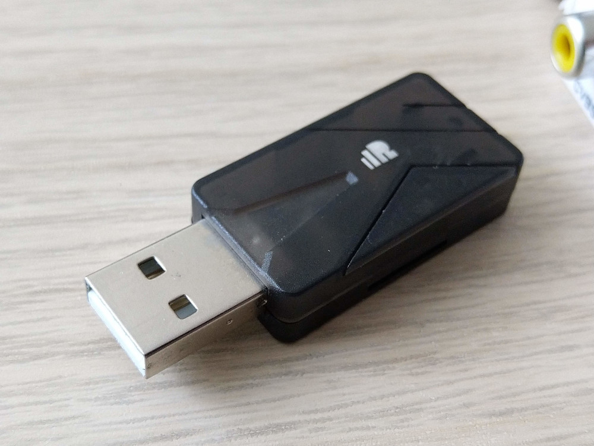
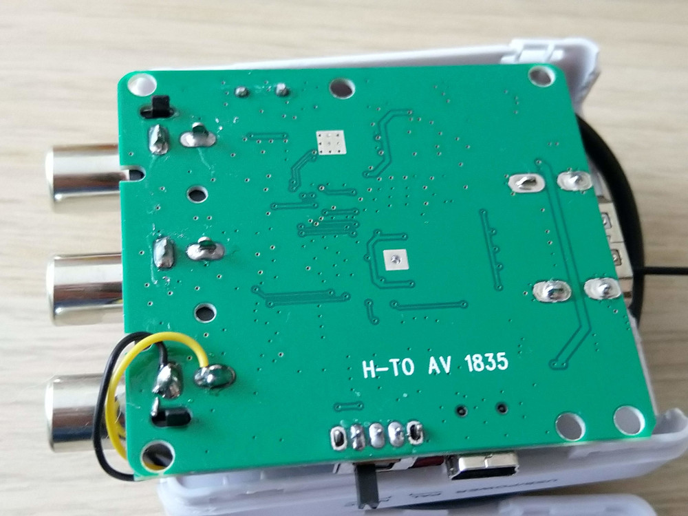

Completely wireless setup for your drone racing simulator
Simulators
There are several notable simulators on the market, namely VelociDrone, DRL Sim and Liftoff.
Setup described in this post is universal and works with all of them, but since Liftoff is my sim of choice I'll use it as an example :)
The Problem
We keep our gaming PC in the living room. It makes sense: 4K TV, surround sound, comfortable couch.
What doesn't make any sense is running 5m+ USB cable from PC to the transmitter and a 5m+ HDMI cable to the goggles to get an immersive simulator experience.
With a few cheap components and basic soldering I was able to go completely wireless. Let me show you how.
But first here's a Fatshark DVR of the finished product (keep in mind that video looks order of magnitude better in the goggles during play)
Making the transmitter wireless [sic!]
Did you know that you can use your transmitter to control things over long distances without any wires? Shocking, right? :)
off-the-shelf solution
With FrSky, the easiest way to ditch the USB cable is to just buy a XSR-SIM. No firmware flashing, no soldering, printing enclosures, etc. Plug it into your PC, bind with a new model and fly. It works just like any 2.4GHz D16 receiver on your quad.

It's a bit on the pricey side but performs flawlessly. Just make sure that your firmware versions match (FCC vs EU-LBT).
diy
Alternatively if you use FlySky/Spectrum or don't want to spend extra money and have a spare F4/F7 flight controller and unused receiver, you might be interested in using Betaflight's USB HID joystick mode. It can transform any receiver into USB joystick which can be used to fly a simulator.
JB can show you how some flashing is required, but if you know how to configure Betaflight you'll be fine.
Making your goggles wireless [duh!]

Surprisingly, your goggles are also capable of working without wires (can you notice the antennas) :) And just like in the case of 2.4GHz signal, there are two options.
off-the-shelf solution
You could probably buy something like Skyzone TX-5D and connect it to your PC's HDMI port. I have not tried doing this, but it should work, at least in theory. 600mW output power might be an issue though (heat, power consumption, multipathing, causing interference in residential area)
diy
We can use quad components to build HDMI capable video link.
All we need is any standard 5.8GHz VTX and a HDMI to AV converter. Since most VTXes are designed for in flight operation (cooling) we should add a fan to prevent overheating.
Specifically:
- Mini HDMI2AV ~9$
- Eachine VTX03 because I had it lying around and it can be switched down to 25mW, buy a VTX01 if it's cheaper. ~8$
- 40x40 5V Fan not this exact one, but this size ~2$
To perform this simple mod open the plastic shell of HDMI2AV.
Strip some insulation from the end of black/red wire pairs of the VTX and the cooling fan (leave black/red/yellow alone for now). Join red wires (PWR) together and carefully solder them to this point on the PCB.
As far as I can tell this is the only place where raw USB 5V is easily accessible.
Black (GND) wires can be soldered to any GND terminals. USB port's case or any of its side legs are good choices. They are far from other components and difficult to damage.
Now cut off the connector from black/red/yellow bundle. Strip some insulation off yellow (video) and black (gnd) wires and solder them to correct terminals. Bottom of the PCB is a good option, there's video signal on the top as well (vertical metal prong in the AV connector) if you prefer.

Test time
Plug in USB power. If you're using power-switchable VTX set it to 25mW. Pick a channel (after closing the box access to the VTX will be limited). Now turn on your goggles and see if everything works. Your should see a test image like this one:
Finishing touches
Now take the top half of HDMI2AV and cut a hole in it for the fan (a knife and small pliers are good enough for the job, use eye protection because the plastic breaks easily). Make the hole large enough for the air to freely blow into the case, but small enough that you can tape down the fan corners..
Use double sided tape to mount the fan and the VTX as shown in the picture below. VTX is floating freely just below the fan, airflow is keeping it cool.
DO NOT mount the VTX on the HDMI2AV PCB. Many of its components get very hot during operation, not to mention accidental short circuits.
Now carefully close the lid taking care to not pinch any wires.
Connecting to the PC
Connect both HDMI and USB cables to your PC. Either extend (you'll need to choose correct display in Liftoff) or duplicate you display. Choose reasonable resolution for HDMI2AV (1280x720 seems to work well) Start Liftoff and enjoy :)
Notes and disclaimers
- You're broadcasting your screen unencrypted for all your neighbors to see. Don't read private emails while VTX is enabled.
- I tested HDMI2AV + VTX continuously for over an hour and it seems to keep stable temperature.
- The same cannot be said about Fatshark HDOs + Pro58 receiver. The heat seems to spread and I prefer to let the goggles cool every 20 minutes or so.